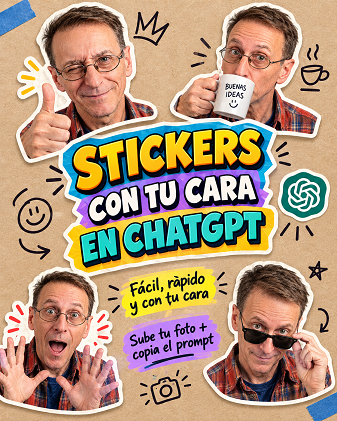

STIKERS CON IA

Manual Rápido de Uso: Creador de Meme-Stickers 3x3
Guía exprés para generar láminas de stickers personalizados con IA a partir de una foto.
1. Paso a Paso
- Sube tu foto: Selecciona una imagen nítida, de frente, con buena luz y tus rasgos visibles (peinado, gafas, barba).
- Elige el estilo (Opcional): El prompt viene en 3D Render por defecto. Si quieres otro, cambia el texto entre corchetes de la primera línea por una de estas opciones:
- Pega y envía: Pega el prompt junto con la foto y envía el mensaje.
2. Personalización Avanzada (Opcional)
Para forzar una temática concreta sin tocar la estructura, añade una sola línea al final del prompt:
«Temática para los 9 stickers: [Mi trabajo de programador / El gimnasio / Vida de oficina / Fin de semana].»
Prompt para copiar
[ESTILO ELEGIDO: 3D Render (Pixar/Avatar)] Usa la foto adjunta como referencia absoluta para el rostro y rasgos físicos (mantén con precisión mi cara, peinado, barba, tono de piel y gafas si tengo), adaptándolos strictly al [ESTILO ELEGIDO] indicado arriba. Actúa como director creativo de memes y diseña una lámina en cuadrícula 3x3 con 9 STICKERS DIFERENTES, individuales y súper expresivos. REGLAS DE DISEÑO: - Formato cuadrícula 3x3 limpia sobre fondo blanco plano, con suficiente separación entre stickers. - Cada sticker debe tener un contorno blanco grueso troquelado (white die-cut sticker outline) y sutil sombra para despegarlo del fondo. - Cada sticker debe incluir un bocadillo de texto (speech bubble) estilo cómic con una frase corta, graciosa e irónica en español. INSTRUCCIONES PARA LAS 9 SITUACIONES (¡Sé creativo y no repitas!): Inventa 9 situaciones cotidianas, absurdas, irónicas o de humor tipo meme. Cada viñeta debe ser única, con gestos faciales exagerados y micro-objetos o accesorios divertidos (tazas de café, laptops echando humo, dinero, fuego, almohadas, etc.). Combina emociones variadas: - Estrés cómico o crisis existencial. - Orgullo o ego desmedido por logros diminutos. - Batería social al 0% o pereza extrema. - Sarcasmo, alegría desbordada o sospecha. ¡Genera los 9 stickers con personalidad única!